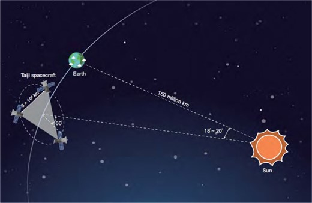
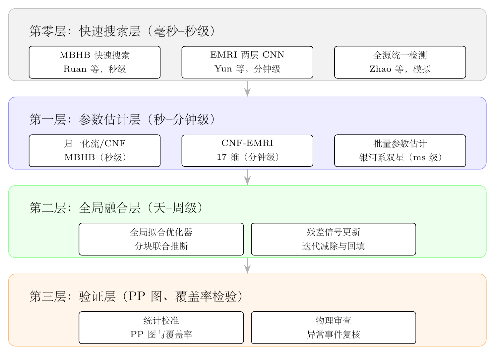

Chapter 10
空间引力波探测任务的数据挑战
地面引力波探测器（LIGO、Virgo、KAGRA）的成功，开创了引力波天文学的新纪元。然而，地面探测器受限于地球尺度和地震噪声，灵敏频段通常在 10 Hz 以上，无法探测更丰富的低频引力波源。空间引力波探测器——欧洲的 LISA（Laser Interferometer Space Antenna）、中国的太极（Taiji）和天琴（TianQin）——将把探测窗口延伸至毫赫兹频段，开辟一个全新的引力波宇宙窗口。
然而，这一频段的丰富性也带来了新的数据分析挑战。王赫等人 [12] 的综述系统梳理了这些挑战：数百万个信号同时叠加、非稳态仪器噪声、极端质量比旋近的高维参数空间，以及全局拟合的巨大计算代价。Du 等人 [15] 的受邀综述进一步指出，从理想化模拟到真实探测管道，太极任务面临的挑战比早期简化模型更复杂。本章以太极任务为主线，系统分析这些挑战的物理根源，并讨论人工智能方法在各个环节可能提供的解决路径。
10.1 空间引力波探测器的科学目标与数据特征
太极计划由中国科学院主导，三颗卫星组成等边三角形星座，臂长约 300 万公里，采用与地球保持约 \(20^\circ \) 角距离的日心轨道方案。其主要科学目标涵盖四类引力波源：
大质量双黑洞并合（MBHBs，\(10^5\)–\(10^8\,M_\odot \)）：星系并合的产物，在空间引力波探测窗口中可形成高信噪比信号，部分事件可能伴随电磁辐射，是多信使天文学的重要目标。
极端质量比旋入（EMRIs）：恒星质量致密天体螺旋并入超大质量黑洞，在并合前经历超过 \(10^5\) 圈轨道，携带极丰富的强引力场信息，是检验广义相对论的精密探针。
银河系双星（Galactic Binaries）：数百万个双白矮星系统同时辐射引力波，在低频段形成“混淆噪声”背景，既是科学目标，也是数据分析的主要干扰源。
随机引力波背景（SGWB）：早期宇宙相变、宇宙弦等过程产生的随机引力波叠加，携带宇宙学信息。
与地面探测器相比，空间引力波数据的核心特征是信号密度极高：在任意时刻，探测器同时接收来自数百万个银河系双星、数十个 EMRI 以及偶发的 MBHB 并合信号，许多信号在频域严重叠加。这使得逐一独立分析单个信号的传统流程难以直接适用。
10.1.1 太极的轨道与技术参数
太极计划的技术方案在多个关键指标上与欧洲的LISA形成互补关系。在轨道设计上，太极三颗卫星绕日运行，星座中心与地球保持约\(20^\circ \)角距离；LISA同样采用日心轨道并与地球保持数千万公里量级的相位差。两者若在时间上形成重叠观测，其轨道位置和臂长差异将带来不同的方向图响应，从而提高联合观测对天空位置、极化和距离参数的约束能力。
在核心技术指标上，太极方案通常以较长臂长和较低位移噪声为设计目标。代表性参数包括位移噪声目标约 \(1\,\mathrm {pm}/\sqrt {\mathrm {Hz}}\)、加速度噪声目标约 \(3\times 10^{-15}\,\mathrm {m/s^2}/\sqrt {\mathrm {Hz}}\)、激光链路长度约3Gm。与臂长约250万公里的LISA相比，太极在部分中低频段可能具有不同的灵敏度侧重，尤其有利于探测质量较大的MBHB系统；具体灵敏度仍取决于最终工程指标和噪声预算。
太极与LISA在科学目标上高度互补。两者频率覆盖范围相近（均主要面向毫赫兹频段），但由于臂长、轨道和噪声预算的差异，对具体质量和红移区间的灵敏度各有侧重。LISA已完成Pathfinder任务的关键技术验证，并于2024年获得ESA正式采纳；太极正在通过太极一号（2019年）和后续技术验证任务逐步积累技术储备，目标发射时间通常设定在2030年代。
10.1.2 天琴的近地轨道方案及其特点
天琴计划由中山大学主导，采用与太极/LISA根本不同的近地轨道方案。三颗卫星绕地球运行，轨道高度约10万公里，臂长约17万公里——仅为LISA/太极的约7%。这一设计的出发点是充分利用近地轨道的工程优势：地球引力场在近地范围内测量精度更高，轨道维持控制更为成熟，与地面测控站的通信窗口更为充裕，整体任务风险低于日心轨道方案。
然而，臂长的大幅缩短对科学能力产生了深刻影响。天琴的峰值灵敏度频段约在 \(10^{-3}\)–\(10^{-1}\) Hz，与太极/LISA有一定重叠，但在低频端（\(<10^{-3}\) Hz）的灵敏度因臂长受限而下降。天琴的科学重点因此集中在几类特定源：已知超紧凑双星和银河系双星、大质量双黑洞的并合晚期阶段、部分EMRI候选以及基础物理检验。特别地，天琴对RX J0806.3+1527等已知超紧凑双星系统有望实现高精度观测，这类“验证源”的探测将为天琴提供宝贵的数据分析标定机会。
从数据分析角度，天琴的近地轨道带来一个额外复杂性：地球重力场的不均匀性会向卫星引入额外的力学噪声，需要更精密的无拖曳控制技术。但同时，近地轨道也使得天琴能够与地基引力波探测器形成独特的联合观测配置——对于某些在两者频段重叠区间（约 \(10^{-2}\)–\(1\) Hz）的信号，天琴与LIGO/Einstein Telescope的联合分析可以实现更好的参数估计。
10.1.3 三任务联合观测的科学增益
太极、LISA和天琴三个任务若能形成时间重叠的联合观测，将带来超过单任务分析的科学增益，这一增益在多个维度均有体现。
在天空定位精度上，太极与LISA的联合观测相当于构建了一个由两套日心星座组成的空间干涉网络。由于两者在轨道相位、臂长和方向图响应上存在差异，联合分析有望打破单任务天空位置、倾角和距离之间的部分简并。对于MBHB系统，单任务的天空定位精度通常可从数十到数百平方度不等（取决于信号持续时间、SNR和并合前预警时间），而太极+LISA的联合分析在有利情形下可将定位面积显著缩小，使并合前宿主星系候选筛选更为可行。天琴加入后，三任务联合分析可能进一步提高定位能力，但实际精度仍取决于源参数、任务重叠时间和噪声状态。
在参数估计精度上，联合观测的增益同样重要。对MBHB系统，联合分析可改善距离、天空位置和倾角等外禀参数的联合约束，对标准汽笛宇宙学具有重要价值。对于EMRI，不同探测器方向图有望帮助打破轨道倾角、偏心率、天空位置等参数简并，使参数估计精度获得不同程度的提升。更重要的是，不同探测器对同一信号的独立测量提供了交叉验证手段，有助于识别和控制系统误差。
在探测灵敏度上，三任务联合分析还可以降低误报率。对于弱信号（SNR接近检测阈值），单任务的信号候选体往往难以区分真实信号与噪声涨落，而要求多任务同时确认则可以将误报概率降低数个量级。这对于随机引力波背景的探测尤为关键——单任务探测背景信号需要长期积分，而多任务的相关分析可以更快速地达到所需的统计显著性。
10.1.4 各类源的预期探测率与参数范围
基于当前的天体物理模型，各类引力波源的预期探测参数有以下估算。对于MBHB，预期年探测率约10–100个，质量范围 \(10^4\)–\(10^8\,M_\odot \)，红移可达 \(z\sim 10\)，对应宇宙大尺度结构形成的早期阶段。高红移MBHB的探测对理解超大质量黑洞的种子形成机制具有关键意义——目前关于超大质量黑洞形成是否通过“种子黑洞”（\(10^3\)–\(10^4\,M_\odot \)）的逐步并合还是直接塌缩（\(>10^5\,M_\odot \)）仍存在争议，MBHB探测率的红移分布可以直接约束这两种模型。
对于EMRI，预期年探测率跨越更大范围，约10–1000个，具体数值对星系核星团密度、俘获率和探测阈值等假设高度敏感。EMRI的轨道参数（偏心率、轨道倾角）在螺旋并入过程中经历复杂的进动演化，使得波形对Kerr时空的几何结构极为敏感。在有利信噪比和波形系统误差可控的条件下，单个EMRI事件有望将超大质量黑洞质量和自旋测量到极高精度。这一“强引力场精密测量”能力使EMRI成为检验广义相对论和无毛定理的重要工具之一。
银河系双白矮星背景预计包含约 \(10^7\) 个双星系统同时辐射引力波，其中在 \(10^{-3}\) Hz以上频段可分辨的约有 \(10^4\) 个。这些可分辨双星将构成“引力波星图”——对银河系双星种群的统计研究，可以约束双星演化通道（特别是公共包层演化阶段）和银河系化学演化历史。随机引力波背景方面，预期在 \(10^{-3}\)–\(10^{-2}\) Hz频段可能探测到原初引力波或宇宙相变背景，但具体振幅对早期宇宙模型高度依赖，探测有一定不确定性。

10.2 全局拟合：空间引力波数据分析的核心难题
全局拟合（Global Fit）是空间引力波数据分析的重要目标：同时对探测器数据中大量重叠信号源进行联合参数估计。其必要性来自信号的相互耦合——单个信号的参数估计会受到其他信号的干扰，联合分析是控制这类系统误差的关键途径。
全局拟合的计算挑战极为严峻。参数空间维度可达到 \(10^5\)–\(10^7\) 量级，具体取决于可分辨银河系双星数量、是否显式建模弱源混淆背景、EMRI数量以及SGWB参数化方式。传统 MCMC 方法难以直接用于如此高维且强相关的参数空间，即便采用先进的嵌套采样算法，完整全局拟合也可能超出现实任务预算。
当前最接近实用的全局拟合方案多采用迭代减除或分块联合拟合策略：首先识别并减除最强或最易分离的信号，然后在残差数据上继续搜索和更新其他源，如此迭代直至主要可分辨信号被提取。这一策略的关键假设是信号强度和频域结构存在可利用的层级，以及每步减除的精度足够高以避免残差污染后续步骤。AI 方法在每个迭代步骤中的快速搜索和参数估计能力，是使这一策略在实践中可行的重要技术支撑。
人工智能方法在全局拟合中的角色是分层的：快速搜索方法（第5章）提供强信号的初始定位，SBI 方法（第6章）对各类源进行快速参数估计，去噪方法（第7章）处理非稳态噪声，最终由全局拟合框架整合这些中间结果。这一分层架构使人工智能方法不再只是单点工具，而成为空间任务数据处理基础设施的一部分。
10.2.1 全局拟合的数学框架
全局拟合的核心是对联合后验分布的估计。设探测器数据为 \(d\)，探测器中同时存在 \(K\) 个信号源，第 \(k\) 个信号源的参数向量为 \(\theta _k\)，则全局后验分布为：
其中 \(p(\theta _k)\) 是各信号源参数的先验分布，\(p(d|\{\theta _k\})\) 是联合似然函数。由于大量信号在频域叠加，联合似然函数通常不能简单分解为各信号似然的乘积——许多频率bin同时携带多个信号的贡献，使得对单一信号源的分析需要同时考虑其他强信号、混淆背景和噪声模型。
在高斯噪声假设下，联合似然函数的对数为：
其中 \(h(\theta _k)\) 是第 \(k\) 个信号源在探测器中产生的应变，内积 \(\langle \cdot | \cdot \rangle \) 按噪声功率谱密度加权。由于参数总维度 \(\sum _k \dim (\theta _k)\) 可达 \(10^5\)–\(10^7\) 量级，直接对联合后验进行逐点采样在当前计算预算下难以承担。
当前代表性的全局拟合实现多采用分块-迭代策略：将 \(K\) 个信号源按类型分组（MBHB组、EMRI组、银河系双星组、背景组），在每个迭代步骤中固定或边缘化其他组的近似参数，对当前组进行贝叶斯推断，然后更新当前组的参数后继续迭代。这一策略将高维联合优化分解为一系列低维子问题，但代价是收敛速度较慢且依赖良好的初始化。
GLASS、BALROG 等框架是当前空间引力波全局拟合研究中的代表性实现。它们通常采用迭代残差减除、贝叶斯模型选择、多模态采样或分块优化等技术，在LISA数据挑战（LDC）等模拟数据上验证了处理复杂多源场景的可行性。不同框架在计算效率、模型完备性和后验精度之间有不同取舍，距离完整任务规模的在线全局拟合仍需进一步发展。
10.2.2 AI在全局拟合中的分层架构

当前主流的解决思路是构建分层的人工智能辅助架构，将全局拟合分解为多个计算上可行的子问题，由不同的人工智能组件分别处理，最后通过全局优化器整合结果。
第零层（快速搜索层）负责对数据中各类信号的初步普查。Ruan等的MBHB快速搜索在数秒内完成对一年模拟数据的扫描；Yun等的EMRI两层CNN探测器在分钟级时间内完成对EMRI候选体的普查；Zhao等的全源统一检测网络在所采用的模拟设置中同时标记多类信号候选。这一层的输出是各类信号候选体的初步位置（在参数空间中的粗定位），为后续精确推断提供初始化信息，减少从宽先验出发的低效采样。
第一层（参数估计层）对各类源的参数进行快速近似或精细估计。归一化流和CNF方法可对MBHB候选体给出约15维参数后验（秒至分钟级）；CNF方法对EMRI候选体探索17维参数后验估计；简单参数化方法可对银河系双星给出低维参数估计（毫秒级，适应大规模批量处理）。这一层的输出是各信号源的近似参数后验分布，作为第二层全局融合的输入。
第二层（全局融合层）将第一层结果作为初始值或提议分布，运行全局拟合算法。由于第一层已经提供了较好的初始参数估计，全局拟合所需的迭代次数有望减少，计算代价可能从月级量级压缩至天至周级量级。全局融合层的输出是联合后验分布的近似，用于计算主要可分辨信号源参数的最终估计和不确定度。
第三层（验证层）对第二层输出进行统计一致性检验：PP图检验SBI输出的后验分布是否经过校准，覆盖率检验确认可信区间的统计意义，并对异常事件（如显著偏离GR预言的信号）开展专项分析。这一层的存在是全局拟合结果能够获得科学界信任的必要条件。
10.2.3 迭代减除的误差积累与AI精度要求
迭代减除策略的可行性依赖于每步减除的精度足够高，使得残差中的信号残留不会对后续步骤造成显著污染。量化分析这一要求，可以给出AI方法精度的硬性门槛。
设每步参数估计的系统误差为 \(\epsilon \)（定义为参数估计偏差与真值之比），则该步减除后，残差中保留的信号功率约为 \(\epsilon ^2\) 倍的原始信号功率。对于有 \(N\) 个可分辨银河系双星的迭代减除，若每步精度 \(\epsilon \)，则经过 \(N\) 步后，残差中所有双星的信号残留叠加的总功率约为 \(N\epsilon ^2\) 倍的平均信号功率。当 \(N\epsilon ^2 \sim 1\) 时，残差噪声地板与单个双星信号相当，后续的EMRI等弱信号分析将受到严重干扰。
对于 \(N\sim 10^4\)（可分辨银河系双星数量的保守估计），这一简单估算给出 \(\epsilon < 1/\sqrt {N} \approx 0.01\) 的量级要求，即每步参数估计的系统误差需要接近百分之一量级。真实管道中的要求会随信号强度分布、频率重叠程度和误差相关性而变化，但这一估算说明：SBI方法的系统误差（由训练集偏差、网络容量限制等引起）需要被严格校准，才可能支撑迭代减除的稳定运行。进一步压缩并量化系统误差，是全局拟合从概念验证走向实际应用的关键技术挑战。
10.3 主要波源类型的人工智能分析方法
10.3.1 大质量双黑洞：从快速搜索到精确参数估计
MBHB 并合是空间引力波探测器最强的信号源，其低延迟探测对多信使天文学至关重要。Ruan 等人 [83] 开发的深度学习快速搜索方法能够在数秒量级处理一年的 LISA 模拟数据；在所采用的测试集中，该方法识别了注入的 MBHB 并合事件，并未报告误报。需要强调的是，这一结果来自特定模拟数据集和评估条件，真实任务中的误报率还需结合噪声非平稳性、数据质量标记和统计显著性评估进一步验证。即便如此，其计算效率的量级优势仍使其成为全局拟合分析的有力初始化工具。
在参数估计层面，Du、Liang、Wang 等人 [22] 将归一化流方法应用于太极任务的 MBHB 参数估计，处理了太极特有的时变响应函数和混淆噪声背景，实现比传统方法快几个数量级的推断速度。Liang 等人 [23] 进一步引入连续归一化流（CNF）和流匹配技术，在精度和速度上均有提升。Sun 等人 [25] 的混合推断方案（CVAE + 贝叶斯采样）在三探测器（太极 + LISA + 天琴）联合观测场景下，将采样时间压缩至原来的 14.0%，同时维持贝叶斯精度。
在具体方法实现上，Ruan等的深度学习快速搜索使用ResNet作为骨干网络，输入为TDI（时间延迟干涉）AET数据通道的时频表示。网络在LDC Radler数据集（包含若干注入MBHB事件的1年模拟数据）上训练和测试，在该设置中成功识别注入事件且未报告误报，单次处理时间约为秒级。相比于传统模板搜索方法，这一计算优势使得MBHB的近实时监测成为可能，对于捕捉电磁对应体具有重要意义。
Du等的归一化流参数估计在对数总质量、质量比、自旋、天空位置、距离、倾角、极化角和并合时刻等约15个参数上给出后验估计。特别值得注意的是，太极的时变响应函数会使天空位置后验呈现多模态结构（一年运动过程中，探测器对同一天空位置的敏感性随时间变化，导致存在多个似然极大值），而归一化流方法的生成建模能力有助于处理这种多模态性。Liang等的CNF方法（基于流匹配技术）进一步改善了多模态后验的建模，在天空位置参数的覆盖率检验中表现出较好校准性。
10.3.2 极端质量比旋入：高维参数空间的突破
EMRI 是空间引力波数据分析中最困难的问题之一。其 17 维参数空间、强参数简并（多极大值似然函数）、以及较高的波形计算代价，使直接传统 MCMC 方法在现实计算预算下面临严峻挑战。
Yun 等人 [84] 提出的两层 CNN 方法在 SNR 50–100 的模拟范围内实现了 96.9% 的 EMRI 探测真正率，并在测试设置中给出超大质量黑洞质量和自旋的高精度估计，为后续参数估计压缩搜索空间。Liang 等人 [24] 将连续归一化流应用于 EMRI 参数估计，在 17 维参数空间中展示了比传统采样快几个数量级、且在模拟测试中通过校准检验的推断能力，是机器学习方法进入这一高难度问题的重要进展。
Yun等的两层CNN方法针对EMRI探测的特殊困难进行了专门设计。EMRI信号在频域表现为密集的谐波梳状结构，每个谐波的频率随时间缓慢演化（频率漂移量级取决于源参数），与银河系双星的近单频信号有本质区别。第一层CNN输入为TDI AET通道数据的时频谱图，通过多尺度卷积捕获EMRI谐波的特征模式，输出为“EMRI候选”或“非EMRI”的二分类决策。第二层CNN对第一层确认的候选体进行精细特征提取，直接估计超大质量黑洞的质量和自旋——这两个参数决定了Kerr时空的主要几何特征，是EMRI轨道频率结构的主要决定因素。通过预先估计这两个参数，后续精确参数估计的搜索空间可从17维压缩至约15维，从而降低计算代价。
Liang等的CNF-EMRI工作是机器学习方法在空间引力波数据分析中值得重视的成果，其意义超越了单纯的技术加速。在方法论层面，它表明SBI方法有能力处理引力波数据分析中高度困难的参数估计问题——17维强简并参数空间中的多极大值后验分布——而传统MCMC方法对此类问题的收敛时间可能达到多年量级。在科学意义层面，更高效的EMRI参数估计将支持太极/LISA实现其旗舰科学目标——对超大质量黑洞周围Kerr时空的精密测绘，并为广义相对论和黑洞无毛定理的强场检验提供关键数据分析工具。在方法论推广层面，CNF在EMRI这一高难度问题上的成功，说明SBI方法有潜力扩展到更广泛的高维强简并推断场景，但其适用范围仍需要在更多物理模型、噪声条件和先验设定下系统检验。
Liang等的CNF-EMRI方法是当前EMRI参数估计中具有代表性的机器学习实现。训练集由FastEMRIWaveforms（FEW）生成的约50万条EMRI波形（覆盖17维参数空间）组成，FEW通过快速波形生成技术显著降低了单条波形的生成时间。网络架构为条件归一化流，以TDI AET三通道的频域表示为条件输入，输出17维参数的联合后验分布。在独立测试集上，17个参数的PP图在统计误差内通过一致性检验，表明后验分布在该模拟设置下具有良好的校准性。推断时间达到秒级或亚秒级（GPU加速），较传统采样方法实现了数量级加速。
10.3.3 全源类型统一检测
Zhao 等人 [82] 提出的多阶段自注意力深度神经网络，在所采用的模拟设置下探索了对多类空间引力波源（银河系双星、MBHB、EMRI、随机背景）的统一检测与提取；在 SNR = 50、误报率 1% 的条件下，各类源检测率达到较高水平。这一统一框架的意义在于：它减少了为每类源单独开发和维护专用算法的工程复杂性，为全局拟合管道提供了统一信号检测前端的可能方案。
多阶段自注意力架构的核心设计思想是：不同类型的引力波信号具有不同的时频特征模式，但都可以在足够宽广的特征空间中被统一表示。第一阶段使用多尺度卷积提取局部时频特征（适合捕获银河系双星的单频模式和EMRI的谐波梳结构）；第二阶段使用Transformer自注意力机制捕获长程时序相关性（适合追踪MBHB长达数月的旋入演化）；第三阶段使用多头输出头（multi-head output）同时对四类源给出检测决策。
在SNR = 50的模拟条件下，MBHB、EMRI和双白矮星等源的检测率均达到较高水平，随机背景振幅估计也表现出一定精度；在SNR较低的样本上，检测率有所下降但仍保持可用水平。这一统一检测框架在实际全局拟合管道中可以作为数据预处理的第一道关口，快速筛选出各类信号候选体，为后续专用参数估计方法提供输入。其真实任务性能仍需在更复杂噪声、源重叠和不完整训练分布下进一步验证。
10.4 非稳态噪声：从理想模拟到真实管道
早期空间引力波数据分析研究大多基于理想化的平稳高斯噪声假设。然而，真实的空间探测器在运行中不可避免地产生各种非稳态噪声，这些噪声在地面测试中难以完全预测和模拟。
Xu 等人 [29] 系统研究了三类可预见的非稳态噪声：数据间隙（例行维护或意外中断导致的数据缺失）、暂态噪声（仪器或环境扰动产生的短时高幅度脉冲）、以及时变噪声自相关（噪声功率谱密度的缓慢漂移）。针对这三类噪声及其混合情形，该工作开发的深度学习模型在保持理想场景性能的同时，展示了显著的非稳态适应性。
Du 等人 [15] 的受邀综述进一步指出，从理想化的 LISA 数据挑战（LDC）场景到太极真实探测管道，数据分析面临的挑战远比预期复杂：高保真探测器响应仿真、轨道动力学效应、时间延迟干涉（TDI）的精确实现，以及多种噪声源的联合建模，都需要系统性的方法论突破。
10.4.1 太极的噪声模型与TDI原理
太极的噪声模型由三类主要成分构成，各自在不同频段主导探测器的灵敏度极限。
第一类是加速度噪声（acceleration noise），来源于残余气体分子碰撞、宇宙线打击、热辐射压力涨落等对检验质量的随机力扰动。其功率谱密度为：
在低频段（\(f < 4\times 10^{-4}\) Hz）随 \(f^{-2}\) 增长，是低频灵敏度的主要限制因素。
第二类是光学路程噪声（optical path noise），来源于激光相位噪声残余、光子散粒噪声、望远镜热形变等。其功率谱密度约为：
在高频段（\(f > 10^{-2}\) Hz）近似为白噪声，是高频灵敏度的主要限制因素。
第三类是激光频率噪声，其量级约为 \(10^9\) Hz/\(\sqrt {\mathrm {Hz}}\)，比引力波信号（等效位移噪声约 \(10^{-12}\) m/\(\sqrt {\mathrm {Hz}}\)）大约12个量级。如此巨大的激光频率噪声必须通过时间延迟干涉（TDI）技术消除，才能使引力波信号从噪声中显现。
TDI的工作原理是通过延迟各臂的激光信号并进行线性组合，在代数上抑制激光频率噪声。以最简单的Michelson X通道为例，其构造可示意为：
其中 \(D_{ij}\) 表示沿臂 \(ij\) 方向的时间延迟算符，\(h_i\) 表示第 \(i\) 颗卫星上的激光相位测量。当臂长近似恒定时，激光频率噪声可在一阶TDI组合中高度相消；当臂长随时间变化时，需要使用第二代TDI（TDI 2.0）处理时变臂长效应。实际数据处理中，亚采样延迟通过Lagrange插值或sinc插值实现，插值精度直接影响TDI的激光噪声抑制效果。
TDI生成的A、E、T三个正交通道（由X、Y、Z通道的线性组合构成）具有不同的方向图响应：A和E通道对引力波信号敏感，T通道在低频段对引力波不敏感，可用于监测仪器噪声。这三个通道的联合分析是空间引力波数据处理的标准输入格式。
10.4.2 三类非稳态噪声的物理机制与影响
数据间隙是空间引力波探测器运行中需要重点考虑的非稳态数据质量问题。其来源包括：例行维护操作（激光重新锁定、推进器点火调轨）、意外中断（宇宙线打击导致的仪器复位）、以及数据传输中断。典型的数据间隙持续时间可能从数秒到数小时不等，发生率需由实际任务运行状态和地面测控策略确定。
数据间隙对TDI的影响具有特殊性：由于TDI利用延迟相消，单臂数据间隙会通过延迟算符传播，导致TDI输出的多个时间点同时受影响。具体地，若某臂在时刻 \(t_0\) 发生持续 \(\Delta t\) 的数据间隙，则TDI X通道在 \(t_0\)、\(t_0 + L/c\)、\(t_0 + 2L/c\) 等多个时刻均受到影响（\(L\) 为臂长，\(c\) 为光速），形成“扩散”的噪声超出。这一传播效应使得数据间隙的影响范围远大于间隙本身的持续时间，对后续信号分析造成更广泛的干扰。
暂态噪声（glitch）在太空环境中的来源可能包括宇宙线打击、激光锁定失调、推进器动作和热控扰动等。高能粒子穿过检验质量时，可能通过电荷沉积或动量传递引发短时扰动；太阳活动周期也会影响带电粒子环境。由于具体发生率和振幅分布依赖探测器设计、轨道环境和在轨控制策略，相关模型应在技术验证任务和主任务早期数据中持续标定。
时变噪声自相关（time-varying noise PSD）可能来源于探测器热环境、激光链路状态、检验质量带电状态和太阳活动等因素的缓慢变化。卫星热控系统虽然维持激光器和光学平台的温度稳定，但微小温度涨落仍可能导致激光功率、光学路程和加速度噪声的缓慢漂移。此外，太阳耀斑、日冕物质抛射等事件会影响卫星热环境和带电粒子环境，导致噪声特性的突变。
Xu等鲁棒模型的关键设计是在训练集中系统性地引入各类非稳态噪声的模拟样本，使网络学习对噪声类型变化较不敏感的表示。在理想噪声、数据间隙、glitch以及混合非稳态噪声等测试情形中，鲁棒模型相对于只在理想噪声上训练的基线表现出更稳定的重叠度。这一结果表明，通过训练集的系统性扩充，可以在受控模拟条件下显著提升模型对复杂运行条件的适应能力；但其在真实在轨噪声中的表现仍需要后续数据验证。
10.5 高保真仿真与现实探测管道的构建
空间引力波数据分析算法的开发和验证，依赖于高保真的模拟数据。Du 等人 [15] 的综述系统梳理了太极高保真仿真的关键要素：
探测器响应仿真：太极星座的轨道运动导致探测器响应函数随时间变化（一年周期），需要精确的轨道动力学模型和时间延迟干涉（TDI）实现。早期工作（Du、Liang、Wang 等 [22]）已揭示这一时变响应在参数估计中引入的额外多模态结构。
波源模型的完备性：高保真仿真需要覆盖主要预期波源类型，包括银河系双星种群模型、MBHB 波形、EMRI 的 Kerr 时空轨道演化，以及各类随机背景的功率谱模型。
噪声模型的真实性：从理想高斯噪声到包含非稳态成分的真实噪声，是算法从实验室走向实际应用的关键一步。Xu 等人 [29] 的工作为这一过渡提供了方法论基础。
多任务协同：太极、LISA、天琴三个任务若能形成重叠观测，将有望提升参数估计精度（Sun 等 [25] 在三探测器场景下的验证）和天空定位能力。跨任务算法的共享与优化，是降低整体研发成本的重要方向。
空间引力波数据分析的最终目标，是构建一个能够在任务运行期间持续、自动、可靠地处理海量数据的完整管道。这一管道需要将本书前述各章的方法——信号识别（第5章）、参数估计（第6章）、去噪（第7章）、算法自动发现（第8章）、物理-数据融合（第9章）——有机整合，形成一个既高效又可靠的科学数据处理系统。AI 方法在这一系统中不只是单点性能优化，而是提高完整管道计算可行性的重要使能技术。
高保真仿真基础设施的建设不仅服务于算法开发和测试，还在科学验证中发挥关键作用。太极任务发射后，高保真仿真器可用于校准在轨探测到的信号：通过将观测数据与高保真模拟预测对比，可以发现系统误差的来源（如TDI实现的不完善、轨道动力学模型的偏差），并指导数据分析算法的在线更新。LDC（LISA数据挑战）的历史演进已经展示了这一“模拟→算法开发→模拟升级→算法改进”迭代循环的价值：从早期较理想化的数据集，到包含多源叠加和更真实探测器响应的复杂模拟，挑战赛不断暴露算法在新条件下的不足，并推动全局拟合、MBHB搜索和AI方法的发展。太极高保真仿真平台的建设，是这一良性循环在中国主导的空间引力波任务中的延续。其深层意义在于：每一轮仿真升级不仅提高数据真实性，还通过暴露算法缺口来驱动方法创新，从而在任务发射前积累更充分的方法论储备并降低在轨数据分析风险。
10.5.1 EMRI波形生成的数值方法与快速近似
EMRI波形生成是空间引力波数据分析中计算代价最高的环节之一，也是制约EMRI参数估计可行性的关键瓶颈。精确的EMRI波形需要求解Kerr时空中的Teukolsky方程，这是一个描述Kerr背景上引力扰动的偏微分方程，其数值求解需要处理复杂的边界条件和大量的谐波模式。
EMRI轨道演化基于Kerr时空中的测地线方程，考虑引力自力（gravitational self-force）对轨道的反作用效应。引力自力是小质量天体在大质量黑洞引力场中运动时，自身引力场对自身轨道的反作用，其效应导致轨道能量和角动量的缓慢耗散，驱动轨道向内螺旋并最终并合。精确计算引力自力需要求解一阶（甚至二阶）引力自力方程，这在数值上极为昂贵，目前仅对特定轨道构型（如圆形赤道轨道）有完整的数值结果。
FastEMRIWaveforms（FEW）框架通过快速谐波求和、插值和GPU加速等技术，将单次EMRI波形生成时间从传统实现的分钟级显著压缩到秒级甚至更短。FEW的核心思想是利用EMRI波形的多谐波结构，将模式振幅、相位和轨道演化中的昂贵部分预计算或高效近似；在给定轨道参数后，通过查表、插值和快速叠加得到波形。这一方法在速度和精度之间取得了实用折中，是EMRI参数估计和SBI训练的重要使能技术。
10.5.2 LISA数据挑战的历史演进与AI方法的崛起
LISA数据挑战（LDC）是推动空间引力波数据分析方法发展的重要平台，其历史演进反映了数据分析问题从单源、理想噪声逐步走向多源叠加和更高保真仿真的过程。
早期的 Mock LISA Data Challenges 主要围绕单源或少量源的检测与参数估计展开，验证了贝叶斯采样、MCMC、嵌套采样和匹配滤波类方法在MBHB、银河系双星和EMRI问题上的可行性，同时也暴露了计算代价和源混叠处理的困难。随着挑战数据集逐步纳入银河系双星混淆背景、多个源类和更真实的探测器响应，全局拟合问题逐渐成为核心议题。
近年的LDC数据集（如Radler、Sangria等）进一步提高了源叠加、探测器响应和噪声模型的复杂度，为机器学习方法提供了更接近任务需求的验证环境。Ruan等的深度学习方法在Radler类MBHB快速搜索任务中展示了秒级扫描一年模拟数据的能力，说明AI方法可以在空间引力波低延迟搜索中发挥重要作用。需要强调的是，这些结果仍属于模拟数据挑战中的性能验证，能否直接迁移到真实任务管道，还取决于噪声模型、信号分布、数据质量标记和统计显著性评估的进一步完善。
总体而言，LDC的价值不在于给出某一类方法的最终胜负，而在于提供可复现的共同基准，使传统贝叶斯方法、全局拟合框架和AI方法能够在同一数据条件下接受检验。未来空间引力波数据分析很可能形成“AI快速搜索与初始化 + 贝叶斯/全局拟合精确验证”的协同格局，而不是由单一方法完全主导。
10.6 数据分析管道的系统工程挑战
从单一方法的研究原型到能够在任务运行期间可靠运行的完整数据分析管道，需要跨越一系列系统工程层面的挑战。这些挑战不属于算法本身，而属于将算法集成为可运行系统的工程实践。
10.6.1 实时性与低延迟要求
大质量双黑洞并合的多信使天文学对数据分析提出了严格的低延迟要求。若存在可观测电磁对应体，从并合发生到可观测亮度峰值可能只有数小时至数天的时间窗口。这意味着数据分析系统需要尽可能在并合发生后数分钟至数小时内完成初步探测和天空定位，才能有效指导后续的电磁观测。
当前地面引力波数据分析系统（如 GstLAL）已能实现分钟级的低延迟预警。对于空间探测器，由于信号持续时间更长（旋近阶段数月至数年），低延迟分析的难度不在于快速处理单次数据，而在于持续追踪信号演化并动态更新并合时刻预测。Xu 等人 [28] 的旋近去噪框架提供了实现这一目标的方法论基础，但将其集成为连续运行的实时系统仍有大量工程工作。
10.6.2 模型更新与在线学习
空间引力波探测器的运行周期预计长达5至10年。在如此漫长的运行期间，探测器的仪器特性（噪声功率谱、仪器响应函数）将随时间缓慢变化，而科学目标的优先级也可能随早期观测结果的发现而调整。这要求数据分析系统能够随时间更新模型参数，而不是依赖在运行开始前训练的固定模型。
机器学习方法在此面临特有挑战：重新训练大型神经网络模型需要大量计算资源，而在线增量学习（online incremental learning）在保持旧知识的同时学习新数据（即避免“灾难性遗忘”）是机器学习领域尚未完全解决的难题。灾难性遗忘（catastrophic forgetting）是指神经网络在学习新任务时，由于权重更新覆盖了旧任务的知识表示，导致旧任务性能急剧下降的现象。在太极任务中，探测器噪声特性随时间变化，需要持续更新模型以适应新的噪声条件，而不能遗忘在早期数据上学到的信号特征。
弹性权重固化（Elastic Weight Consolidation，EWC）是缓解灾难性遗忘的经典方法，其核心思想是在损失函数中加入正则化项，惩罚对旧任务重要参数的大幅修改。具体地，EWC在学习新任务时，通过Fisher信息矩阵估计每个参数对旧任务的重要性，并对重要参数施加弹性约束，使其在新任务学习过程中保持相对稳定。课程学习（curriculum learning）按照难度逐步引入新样本，也有助于稳健地更新模型。Evo-MCTS框架提供了另一种思路：不更新预训练神经网络的权重，而是在算法层面持续进化，适应新的噪声条件——这一方法天然避免了灾难性遗忘问题，因为进化搜索不依赖于固定的神经网络权重。
10.6.3 验证、确认与科学可信度
引力波数据分析系统的科学输出（引力波事件目录、参数估计结果）将成为后续科学研究的基础数据。这要求分析管道能够提供可靠的不确定度量化——不仅是统计不确定度（后验分布的宽度），还包括系统不确定度（模型误差、噪声模型偏差、算法近似误差）。
对于机器学习方法，系统不确定度的评估尤为困难。神经网络在训练分布内通常过度自信（confidence calibration 问题），而在训练分布外则可能给出毫无意义的置信度。建立引力波 AI 方法的系统不确定度量化框架，是其从研究工具走向科学生产系统的必要条件，也是当前领域最活跃的研究方向之一。
PP图（probability-probability plot）是SBI方法统计一致性验证的核心工具。对于一个经过正确校准的后验估计器，若从先验分布中采样真实参数 \(\theta ^*\)，生成对应的模拟数据 \(d\)，然后用SBI估计后验 \(p(\theta |d)\)，则 \(\theta ^*\) 在后验分布中的分位数应服从均匀分布。PP图通过绘制分位数的经验累积分布函数与理想均匀分布的对比，直观展示后验估计的校准质量。偏离对角线表明后验估计存在系统偏差（过度自信或过度保守），需要通过后处理校准（如等分回归）加以修正。
10.6.4 容错与鲁棒运行
空间引力波探测器在太空运行期间很可能遇到各种异常情况：数据间隙（卫星维护、激光锁定失调）、仪器噪声突变、宇宙线打击导致的暂态噪声等。数据分析系统需要对这些异常情况具备鲁棒性，不仅不被异常数据误导，还能在异常恢复后快速重新同步分析状态。
Xu 等人 [29] 对三类非稳态噪声的系统研究，是为空间引力波数据分析管道建立鲁棒性设计规范的重要起点。未来的完整管道还需要在此基础上，开发针对其他可能异常情况的处理策略，以及异常检测和恢复的自动化机制。异常检测本身也可以借助AI方法：通过训练一个专门识别各类仪器异常（数据间隙、glitch、噪声突变）的分类器，在数据进入主分析管道之前进行预筛选，将异常数据段标记并路由到专用处理模块，从而保护主分析管道不受异常数据的干扰。
在系统工程挑战中，“科学与工程的协作模式”是一个往往被忽视但至关重要的维度。引力波数据分析软件既是科学工具（产出科学结论），也是工程系统（需要持续运行、维护和更新）。在LIGO-Virgo时代，这一张力通过大型国际合作组织（LSC，LIGO Scientific Collaboration）来协调：科学家设计分析方法，工程师实现并维护计算基础设施，软件工作委员会（Software Working Groups）协调两者的衔接。对于太极任务，建立类似的科学-工程协作机制是AI驱动数据分析管道能够从实验室走向生产系统的制度保障。特别是，AI模型的版本管理（记录哪个模型处理了哪段数据）、模型更新的回溯验证（新模型是否与旧模型给出一致的历史结果）、以及算法文档的完备性（使未来研究者能够重现当前的分析结果），都需要在制度层面建立规范，这是人工智能方法在严肃科学中负责任应用的基本要求。从LIGO的经验来看，科学-工程协作机制的建立本身也是一个迭代过程：早期的LIGO数据分析软件以科学家的原型代码为主，工程化水平有限；随着探测事件的积累和数据规模的增长，LIGO逐步建立了完善的软件工程规范，包括代码审查流程、持续集成测试、以及详细的版本控制记录。太极任务可以从LIGO的这一历史中汲取宝贵经验，从任务立项阶段便开始规划科学-工程协作框架，避免在任务运行中期因制度缺失而引发的数据质量危机。
| 管道层次 | 核心挑战 | AI 解决方案 |
| 信号检测 | 数百万信号同时叠加 | 多阶段自注意力网络（§5.4） |
| 计算实时性要求 | Evo-MCTS 自动优化管道（§8.3） | |
| 参数估计 | EMRI 17维强简并 | CNF 流匹配（§6.4） |
| MBHB 时变响应函数 | 归一化流+变换映射（§6.3） | |
| 三探测器联合推断 | CVAE 混合推断（§6.5） | |
| 信号去噪 | 30天旋近低信噪比 | 深度去噪+并合时刻预测（§7.4） |
| 数据间隙/暂态噪声 | 鲁棒深度学习模型（§7.5） | |
| 全局拟合 | \(10^5\)–\(10^7\) 量级参数空间 | 分层 AI 架构（§10.2） |
| 信号迭代减除 | 快速搜索初始化（§5.4.2） | |
| 系统工程 | 模型在线更新 | 进化搜索持续优化 |
| 不确定度量化 | SBI 统计一致性框架（§6.7） | |
从系统工程的视角审视，太极数据分析管道的构建是一项跨越十年、需要持续迭代的系统工程。与地面引力波探测器不同，太极在轨期间的数据特性（噪声谱、仪器响应）会随时间缓慢演化，算法必须具备在轨适应能力。这要求在管道设计之初就将“可更新性”作为核心设计原则：数据分析模块之间的接口应当标准化，使得任何模块（如信号搜索、参数估计、去噪）的算法升级不会破坏整体管道的稳定性；版本控制系统必须追踪每个数据段用哪个版本的算法处理，以确保科学结论的可复现性；在轨测试机制应利用已知的校准信号（如银河系内的已知双星系统）定期评估各模块的性能，及时发现并修正性能退化。这些系统工程要求看似琐碎，却是将实验室算法研究转化为可靠科学基础设施的关键步骤，也是引力波AI方法走向成熟的必要条件。
空间引力波探测器时代的数据分析，很可能逐步走向一种“人机协作的演化管道”模式：算法在任务运行中依据在轨数据和标准化评估结果持续更新，人类科学家定期审查和指导算法的更新方向，以确保科学目标的一致性和物理可解释性。这种模式相对于当前引力波数据分析中常见的“人工设计、定期更新”范式提出了新的制度、工程和方法论要求。太极团队的前期工作——从MF-CNN的物理先验嵌入，到CNF的EMRI参数估计，再到Evo-MCTS的算法搜索——可视为这种演化管道模式若干关键组件的原型验证，为太极任务的数据分析系统建设提供了方法论参考。
10.7 太极数据分析挑战赛与开放科学
引力波数据分析方法的快速进步，离不开标准化评估平台的驱动。LISA数据挑战赛（LISA Data Challenge，LDC）自2004年起持续举办，通过发布标准化模拟数据集，推动了全球范围内引力波数据分析算法的系统性比较与改进。面向太极任务的模拟数据挑战赛，可在这一经验基础上结合太极任务的具体技术参数和科学目标，构建中国空间引力波数据分析的评估体系。
10.7.1 太极模拟数据挑战赛的设计
太极模拟数据挑战赛（TDC）的设计可充分借鉴LISA数据挑战赛（LDC）的经验，同时针对太极任务的特殊性进行系统性改进。LDC历经多个版本迭代，从较理想化的单源或少量源检测，逐步演进至多源混合信号和全局拟合场景，积累了丰富的挑战赛设计经验。TDC在继承这一框架的基础上，需要将太极的轨道参数（臂长约300万公里、与地球保持约\(20^\circ \)角距离的日心轨道）、仪器噪声模型（位移噪声目标约\(1\,\mathrm {pm}/\sqrt {\mathrm {Hz}}\)、加速度噪声约\(3\times 10^{-15}\,\mathrm {m/s^2}/\sqrt {\mathrm {Hz}}\)）以及科学目标优先级纳入数据集生成框架。
TDC模拟数据集的构成应覆盖太极的主要科学目标。大质量双黑洞并合（MBHB）信号可采用后牛顿波形、EOB波形或数值相对论代理模型生成，覆盖从阈值附近到高信噪比的宽泛范围。极端质量比旋入（EMRI）信号可采用快速EMRI波形生成器（FastEMRIWaveforms，FEW） [123]等工具生成，包含轨道偏心率、轨道倾角、Kerr自旋参数等多维物理参数，信号持续时间从数月到数年不等。银河系双白矮星背景可由大规模双星种群叠加形成，其中一部分高频或高信噪比源可分辨，其余构成混淆噪声背景。仪器噪声模型则应从稳态高斯噪声基线逐步扩展到数据间隙、暂态噪声和时变PSD等非稳态成分，并结合技术验证任务和地面测试数据持续标定。
TDC的评估指标体系从三个维度综合评价参赛算法的性能。参数估计精度采用后验分布的覆盖率（coverage）和Jensen-Shannon散度（JSD）量化，要求在标准PP图检验中通过统计一致性验证。计算效率以单个事件的参数估计时间为基准，区分“实时分析”（\(<\)1小时）、“快速分析”（\(<\)1天）和“精确分析”（无时间限制）三个等级，对应不同的科学应用场景（多信使预警、常规目录发布、精密科学分析）。鲁棒性评估通过在训练集之外的参数区间（如极高红移MBHB、高偏心率EMRI）测试算法性能，量化算法对分布外样本的泛化能力。这一多维评估体系避免了单一指标优化导致的“过拟合评估”问题，更全面地反映算法在实际科学应用中的综合能力。
10.7.2 开放科学基础设施
太极数据分析的开放科学基础设施建设，是推动国际合作和算法快速迭代的关键支撑。在数据格式标准化方面，TDC类数据集宜尽量采用与LISA数据挑战赛兼容的数据格式，以HDF5为底层存储格式，统一定义时间序列数据的采样率、时间延迟干涉（TDI）通道命名（A、E、T）以及元数据结构（仪器参数、注入信号目录）。这一标准化设计可使为LDC开发的数据读取和预处理工具更容易迁移到太极模拟数据，降低国际参与者的技术门槛。
开源工具链的建设是TDC类开放科学基础设施的核心组成部分。LISA Tools生态系统提供了从轨道计算、TDI响应到噪声模拟的工具链；太极相关数据集可在此基础上开发针对太极轨道和噪声参数的适配模块，以提高与国际工具生态的互操作性。BBHx [124]是专为空间引力波探测器设计的GPU加速MBHB波形生成库，可显著降低大规模MBHB模拟数据集的生成成本。FastEMRIWaveforms（FEW） [123]通过快速波形和代理模型加速EMRI波形计算，是构建EMRI模拟数据集的重要工具之一。
模拟数据集的公开发布宜遵循“分阶段开放”原则：挑战赛期间发布不含注入信号目录的盲测数据集，挑战赛结束后公开完整数据集（含真实参数）和评估代码；条件成熟时，可通过Zenodo等平台长期归档并分配DOI，以提高科学结论的可复现性。这类开放数据政策不仅有助于算法的公平比较，也可为后续研究者提供标准化的基准数据集，推动引力波数据分析方法论的累积性进步。
10.7.3 挑战赛揭示的关键技术差距
TDC类挑战赛的评估结果可系统性地揭示当前引力波数据分析方法与实际任务需求之间的关键技术差距，为未来研究方向提供优先级指引。
全局拟合的计算可行性是最核心的技术差距。当前代表性的全局拟合算法（如RJMCMC方法）在处理包含大量银河系双星、若干EMRI和偶发MBHB的混合数据集时，单次完整分析可能需要数周至数月的计算时间，难以满足低延迟分析需求。即便采用GPU加速和并行计算，基于传统采样的全局拟合方法在计算效率上仍面临数量级缺口。人工智能方法（特别是归一化流和扩散模型）在单源参数估计上已实现秒级推断，但如何将这一效率优势扩展到多源混合信号的联合分析，仍是尚未解决的核心问题。
EMRI信号的检测灵敏度是第二个关键差距。EMRI信号的低信噪比、长持续时间（数月至数年）和高维参数空间（17维）的组合，使其成为空间数据挑战中最具挑战性的信号类型之一。低SNR EMRI的检测率对波形模型、噪声背景和搜索策略高度敏感。提升低SNR EMRI的检测灵敏度，需要在波形模型精度（包含自力、偏心率和自旋效应）和检测统计量设计（利用EMRI信号的长时相干性）两个方向同时突破。
非稳态噪声对分析精度的影响是第三个关键差距，也是从理想化模拟到真实探测管道最难跨越的鸿沟。若数据挑战从稳态高斯噪声逐步引入数据间隙、暂态噪声毛刺和时变PSD，许多在理想条件下表现良好的算法都可能出现明显性能退化。因而，空间任务需要在噪声建模（非稳态噪声的实时估计与减除）和算法设计（对噪声非稳态性的显式建模）两个层面进行系统性改进。
10.7.4 国际合作与竞争格局
LISA、太极和天琴三个空间引力波探测任务在数据分析方法上既存在激烈竞争，也有深度合作的内在需求，形成了独特的国际合作与竞争格局。
在方法互补性方面，三个任务的数据分析团队在技术路线上各有侧重，形成了有益的多样性。LISA数据分析团队（主要来自欧洲和美国）在全局拟合框架（RJMCMC：可逆跳转MCMC；GBMCMC：银河系双星MCMC）和波形模型精度方面积累了深厚的技术储备，是传统贝叶斯全局拟合方法的重要推动力量。太极数据分析团队（主要来自中国科学院和国内高校）在人工智能方法的引入和应用上开展了系统探索，MF-CNN、CNF-EMRI、Evo-MCTS等工作构成了人工智能驱动引力波数据分析的重要案例。天琴数据分析团队（主要来自中山大学）在近地轨道特有的噪声建模和数据预处理方面有独特积累，其开发的TianQin Data Analysis Framework（TQDAF）为近地轨道空间引力波数据分析提供了专用工具链。三个团队的技术互补性，为国际合作提供了坚实的基础。
国际合作的必要性体现在多个层面。在算法共享方面，BBHx、FEW等核心工具由国际社区共同开发和维护，任何单一团队都难以独立承担这些基础工具的开发和维护成本。在数据格式标准化方面，LISA Data Format的制定需要三个任务团队的协调，以确保为一个任务开发的数据处理工具可以被其他任务复用。在科学验证方面，对同一引力波事件的独立分析（太极与LISA的联合观测）需要两个团队共享数据处理流程和参数估计结果，这要求在数据格式、坐标系定义和统计方法上达成共识。国际引力波数据分析工作组（IGWDAG）正是为协调这些合作需求而设立的跨任务协调机构。
近年来，中国研究团队在人工智能方法与引力波数据分析交叉方向上形成了较为活跃的研究布局。以太极相关数据分析研究为代表，中国研究者在将深度学习、归一化流、扩散模型等方法应用于引力波数据分析方面，已经形成从方法开发到基准验证的研究链条。这一进展既得益于人工智能基础研究和计算基础设施的发展，也得益于引力波物理学家与人工智能研究者之间的跨学科合作。随着太极任务和相关模拟数据挑战的推进，这一方向有望为太极任务的科学目标实现提供重要的方法论支撑。
开放科学与任务竞争之间的张力，是国际引力波数据分析合作中需要持续平衡的核心问题。一方面，开放数据和开源工具是推动领域快速进步的重要机制，也是建立国际信任和合作的基础；另一方面，在竞争性的科学环境中，核心算法的发布时间、验证状态和维护责任也需要审慎安排。较稳妥的策略是：基础工具和数据格式尽量开放，核心算法在完成验证和发表后开源，挑战赛数据集在评估结束后公开。这一“分层开放”策略在促进国际合作的同时，也为算法验证和任务组织保留必要的节奏控制，体现开放科学原则与工程实践之间的务实平衡。
10.8 本章小结
本章以太极任务为主线，系统分析了空间引力波数据分析的核心挑战与人工智能解决路径。太极/LISA/天琴的四类科学目标（MBHB、EMRI、银河系双星、随机背景）在数据分析层面汇聚为一个核心挑战：全局拟合——\(10^5\)–\(10^7\)量级参数空间的联合推断，对直接传统采样方法构成严重挑战。人工智能方法在全局拟合管道中承担分层角色：Ruan等人的深度学习快速搜索可在数秒内处理一年LISA模拟数据并提供强信号初始定位；归一化流和CNF方法对各类源进行快速参数估计；WaveFormer和鲁棒去噪方法处理非稳态噪声；Zhao等人的多阶段自注意力网络展示了全源类型统一检测能力。非稳态噪声研究揭示了从理想化模拟到真实探测管道的关键跨越：数据间隙、暂态噪声、时变噪声自相关应被视为空间任务运行中的常见挑战。Du等人的受邀综述进一步指出，高保真探测器响应仿真、完备波源模型、真实噪声建模、多任务协同是构建实用分析管道的四个关键要素。人工智能方法在空间引力波数据分析中的角色，正在从单点性能优化扩展为支撑完整管道可运行的重要使能技术。